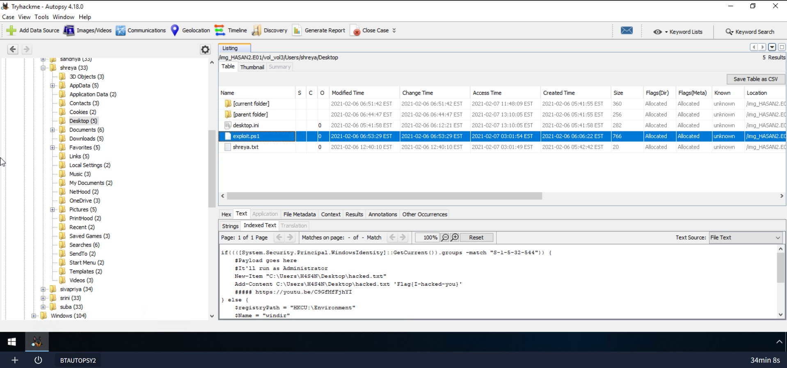
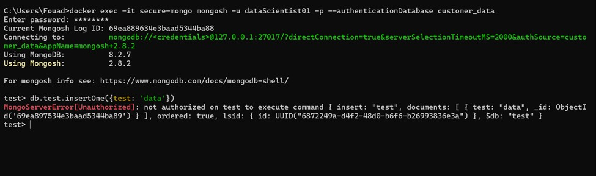
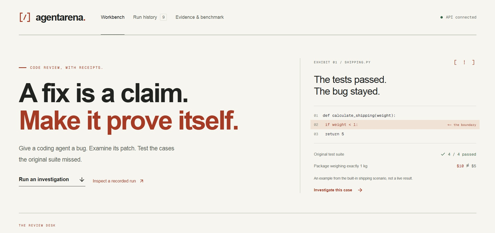

ACTUAL PROJECT SCREENSHOT01 · DIGITAL FORENSICS LAB
Following the digital trail.
Exploring disk evidence with Autopsy: examining file-system artefacts, searching for relevant activity, and documenting findings.
Cybersecurity student. Aspiring analyst.
Professional asker of “wait, why?”
Come in. Open a file. Follow your curiosity.
I’m drawn to the part where scattered details start making sense. That’s what keeps me exploring security analysis and digital forensics.
Start with a good question.I’m studying Cyber Security at Nile University of Nigeria. I’m drawn to of the field: understanding what happened, finding the evidence, and explaining it clearly.Think: a suspicious file, a timeline that doesn’t add up, or a sign-in that deserves another look. That’s where the questions start.
Security analyst is the direction I’m working toward, while keeping room to explore digital forensics and other areas of cybersecurity. My experience so far comes from coursework, , independent learning, and building projects.My current notebook includes Autopsy investigations, MongoDB access control, and testing software fixes with AgentArena.
I’m looking for opportunities to learn alongside a team and contribute to real security work.
These are clickable, by the way. ↙
Go on—open something.

ACTUAL PROJECT SCREENSHOTExploring disk evidence with Autopsy: examining file-system artefacts, searching for relevant activity, and documenting findings.

ACTUAL PROJECT SCREENSHOTTesting MongoDB access inside Docker: authenticating as a database user and documenting a denied write outside its permitted scope.

ACTUAL PROJECT SCREENSHOTAgentArena explores how coding agents handle software bugs, using isolated Docker environments and tests to evaluate proposed fixes.
Setting up Hadoop on Kali Linux taught me to trace configuration errors and verify running services.
Tools I’ve used across my cybersecurity learning.
HANDS-ON EXPOSURE · ALWAYS LEARNINGClick a drawer.
Have a look inside. ↗
Wireshark · Nmap · Cisco Packet Tracer · hping · Aircrack-ng
Nessus · OpenVAS · Burp Suite · Metasploit
theHarvester · dnsenum
John the Ripper · Hydra · Crunch
Autopsy · disk artefacts · evidence documentation
Python · Linux · SQL · Docker · MongoDB
Some late nights.
A lot of learning.
Click a certificate. Have a closer look. ↙
Each certificate has its own story—and its own verification link.
Borrow my laptop. Doodle something. Open a file.
No tasks. No scores. Just have a look around.
Open to cybersecurity internships, entry-level opportunities,
and conversations with people who enjoy the work.